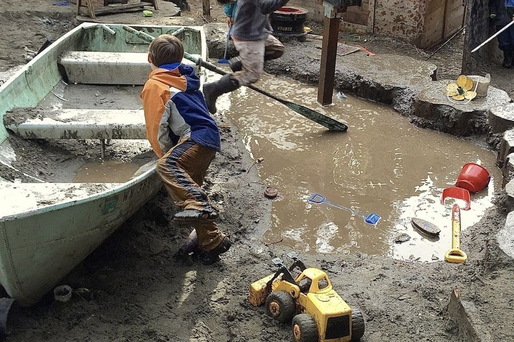
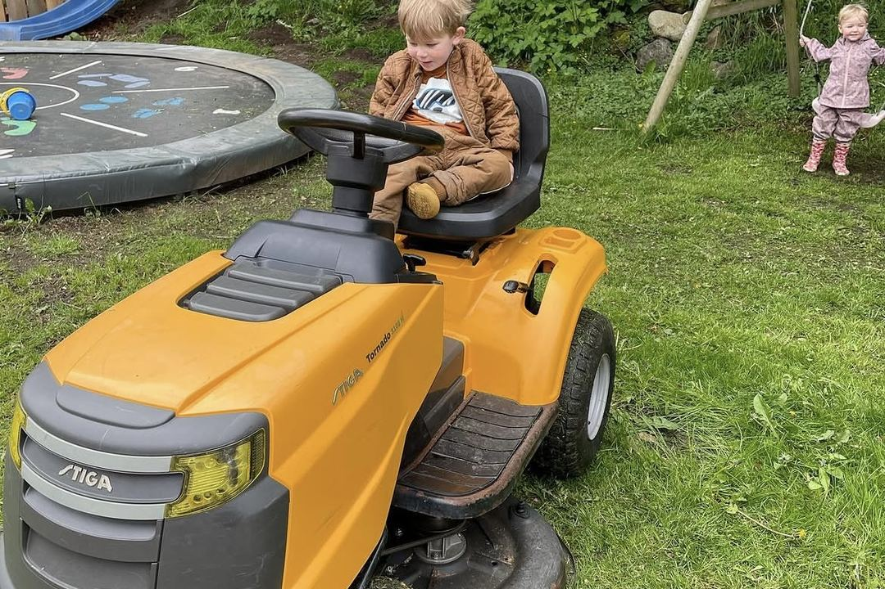
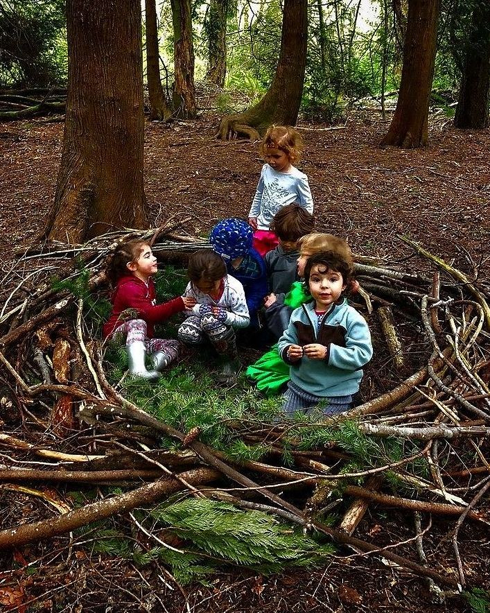
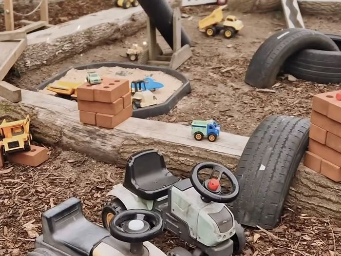
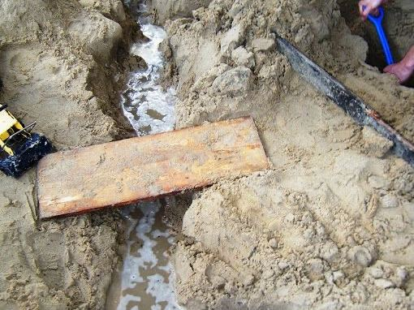
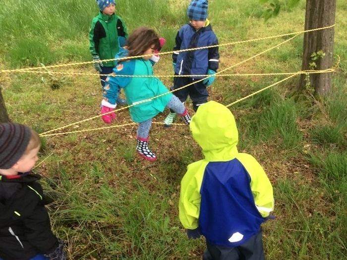

Mudder Klubben
Velkommen til Mudder Klubben
Der findes et lille selskab i Børnegården GRO, som ikke alle børn kender til, før de selv bliver en del af det.

Mudder Klubben er ikke noget, man bare er. Det er noget, man bliver optaget i – med sit eget mudderpas, sit eget navn på klublisten, og retten til alt det, der følger med.
Sådan bliver man medlem
Første dag i Børnegården GRO får jeres barn sit eget mudderpas – et lille, personligt hæfte, der stemples, første gang der graves, mudres eller opdages noget nyt.
Det er ikke noget, man skal søge om eller kvalificere sig til. Man bliver simpelthen inviteret ind, den dag man starter – og så er det op til stemplerne at vise, hvor mange ekspeditioner det er blevet til.
Medlemsfordele
Som medlem af Mudder Klubben får jeres barn:
- Sæde i traktorvognen (fastspændt og sikkert) på vej til klubbens egen ekspeditionsskov i baghaven
- Fuld adgang til den kæmpe sandkasse
- VIP-plads i mudderkøkkenet, hvor der bages, røres og serveres retter, som ingen Michelin-kok nogensinde vil forstå
- Officiel tilladelse til at hoppe i alle vandpytter
- Ret til at komme hjem beskidt – det er ikke et uheld, det er et bevis på en god dag
- Æresmedlemskab af regnbuen efter regn, opdagelse af orme, biller og andre skattefund inkluderet

Turen begynder med traktoren
En rigtig sjov tur begynder med traktoren. Den holder klar med plads i vognen – alle spændt godt fast – og så går turen op gennem baghaven og ind i klubbens egen lille skovlegeplads.

Skovlegepladsen
For der venter mere: en lille naturlegeplads, som ikke er til at se fra vejen. Grene der skal klatres i, stier der skal udforskes, og skjulesteder, kun medlemmer kender til.
Ingen dag i skoven er ens – én dag er det pinde og balancebroer, en anden dag er det en helt ny sti, ingen har prøvet før.
Bag legen ligger der noget rigtig godt
Mudder og vand er nogle af de bedste redskaber, vi har til at styrke børns sanser, finmotorik og nysgerrighed. Men det behøver ikke at lyde kedeligt og fagligt for at virke – det skal bare føles som ren sjov. Og det gør det.
Stempler i mudderpasset
Fra første dag til børnehavestart
Stemplerne følger barnets egen udvikling, så passet vokser sammen med barnet. De yngste får stempler for helt små, sanselige „første gange“ – de ældste får stempler for mere selvstændige bedrifter. Det gør passet til en lille udviklingshistorie.
- Lavet et mudderhåndaftryk
- Fodaftryk i sandkassen
- Bare tæer i en vandpyt
- Klappet en kanin
- Samlet æg ved hønsene
- Første gang med hænderne i dejennår der bages brød
- Fundet en regnorm
- Første rigtige vandpyt-hopmed begge fødder på én gang
- Hjulpet med at give dyrene mad
- Samlet blade eller kastanjer
- Første tur i traktorvognenop til baghaveskoven
- Bygget et „slot“ eller huli sandkassen
- Lavet en lækker ret i mudderkøkkenet
- Set en regnbue efter regn
- Kravlet på den første gren eller stub
- Kendt en af gårdens dyr ved navn
- Hoppet i en vandpyt
- Passet noget, der gror
- Klaret at tage gummistøvler og regntøj på selv
- Blevet den, der viser en ny, mindre ven mudderkøkkenet
Passet bliver ikke stemplet efter en fast plan. Det følger, hvad det enkelte barn rent faktisk oplever og er klar til. Nogle stempler kommer tidligt, andre sent, og det er meningen. Det er barnets egen rejse, ikke en tjekliste, der skal nås.


